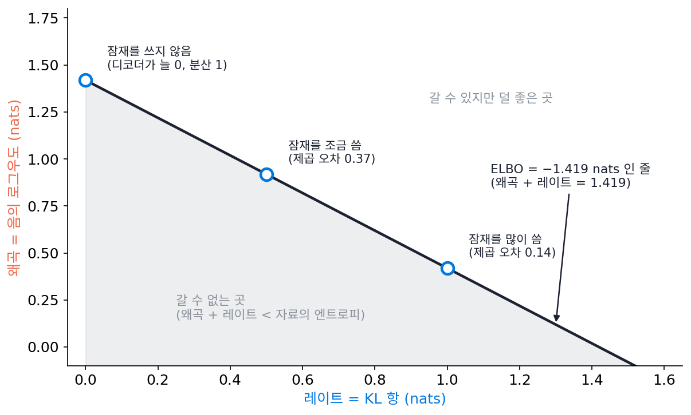
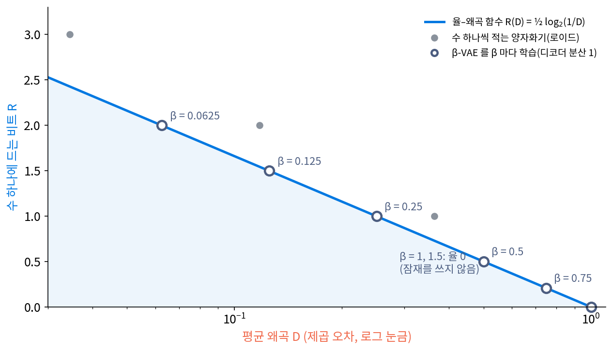
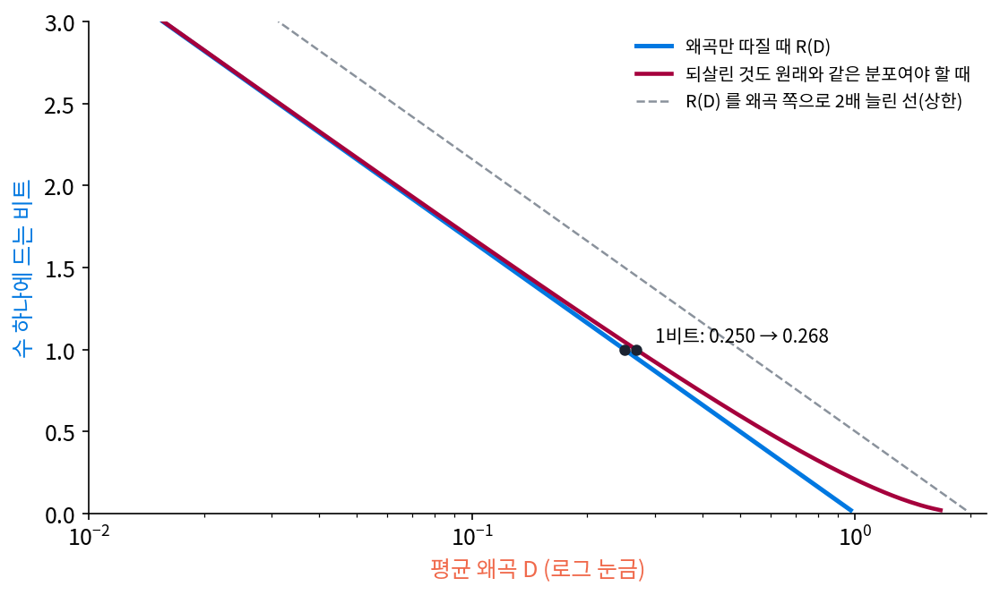
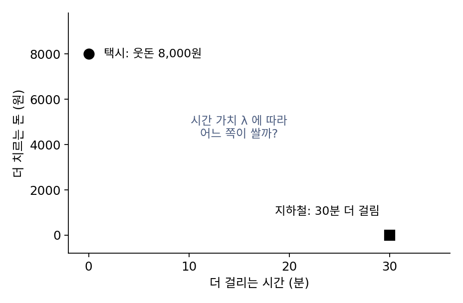
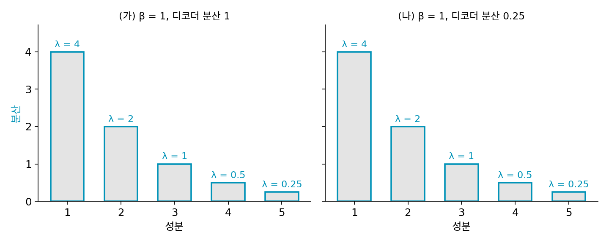
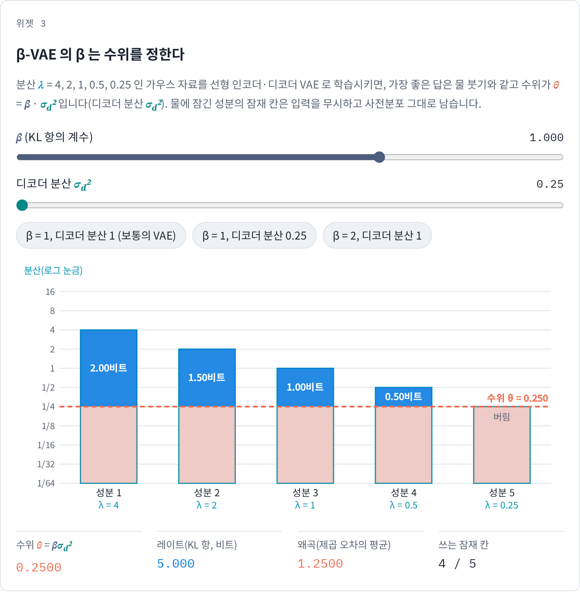
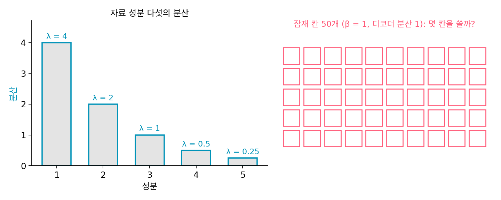
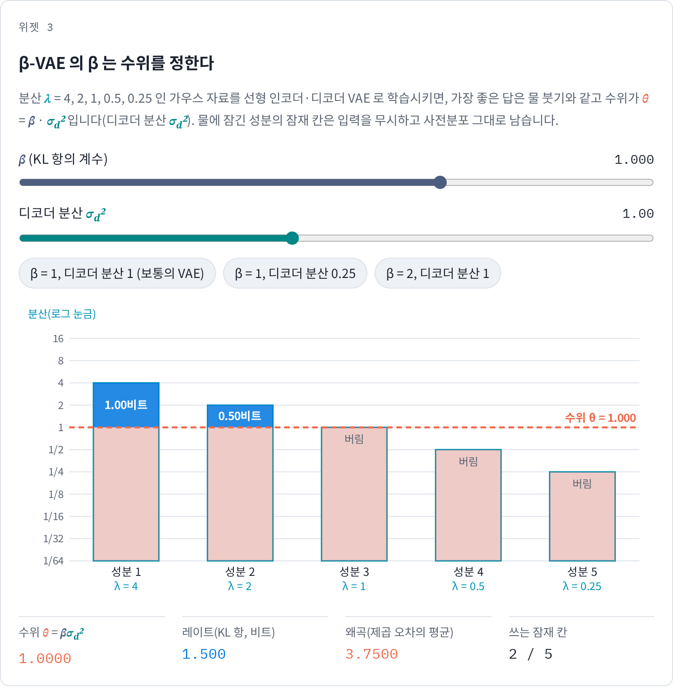

β-VAE: β 는 레이트와 왜곡의 교환 비율
VAE 를 학습시켜 본 사람은 손실이 두 항으로 되어 있다는 것을 안다. 디코더가 입력을 얼마나 잘 되살리는지 재는 되살리기 항과, 인코더가 내놓는 분포가 사전분포에서 얼마나 멀어졌는지 재는 KL 항이다. 두 항을 더한 것이 ELBO(증거 하한)의 부호를 바꾼 것이고, KL 항 앞에 계수 β 를 붙이면 β-VAE 가 된다. 레이트–디스토션의 눈으로 보면 되살리기 항은 왜곡처럼, KL 항은 잠재 코드를 적는 비트처럼 보인다. 그렇다면 β 를 바꾸는 일은 레이트–디스토션 곡선 위에서 무엇을 하는 것일까?
역사: β 하나로 VAE 를 다시 읽기
2017년 딥마인드의 히긴스(Irina Higgins)와 동료들은 ICLR 에서 KL 항에 1보다 큰 계수 β 를 붙인 β-VAE 를 내놓았다. 잠재 칸 하나가 그림을 만든 요인 하나(위치, 크기, 색)에만 반응하게 만들려는 것이 목적이었다. 같은 해 말 알레미와 풀(Ben Poole), 피셔, 딜런, 소러스(Rif A. Saurous), 머피는 「고장 난 ELBO 고치기(Fixing a Broken ELBO)」(ICML 2018)에서 이 계수를 레이트–디스토션으로 다시 읽었다. 그들은 입력과 잠재 사이 상호정보량의 위아래 한계를 세워 VAE 들을 레이트–디스토션 평면에 찍었고, ELBO 값이 같은 모델들이 잠재를 쓰는 정도는 전혀 다를 수 있음을 보였다. 영상 압축기를 배운 발레와 동료들도 자기들의 완화한 손실이 어떤 조건에서 VAE 의 로그우도처럼 읽힌다고 적었다. 압축과 생성 모델이 같은 손실을 서로 다른 쪽에서 쓰고 있었던 것이다.


β 는 KL 항을 얼마나 세게 누를지 정하는 계수잖아요. 그걸 레이트–디스토션으로 읽는 게 뭐가 새로웠어요?

VAE 를 견줄 때 흔히 ELBO 값 하나를 봐요. ELBO 하나만 보면 무엇이 안 보일까요?

ELBO 는 두 항의 합이니까… 합이 같아도 되살리기 항과 KL 항이 나뉜 비율은 다를 수 있어요. 잠재를 많이 쓰는 모델과 거의 안 쓰는 모델이 같은 값을 낼 수도 있겠네요.
알레미와 동료들이 보인 게 그거예요. 그런데 레이트로 읽으려면 입력과 잠재 사이 상호정보량을 알아야 하는데, 이 상호정보량은 직접 계산할 수 없어요. 그래서 위아래 한계부터 세워야 했어요.

아, 그럼 KL 항을 레이트라고 부를 수 있는 것도 그 한계 덕분이네요.

그럼 레이트–디스토션 곡선을 손으로 아는 가우스 자료로 β-VAE 를 학습시키면, β 마다 곡선 위 어디에 앉는지 직접 볼 수 있을까요?
가우스 자료로 β-VAE 를 학습시키기
결과를 미리 알 수 있는 자료로 시작하자. 레이트–디스토션 함수를 이미 손으로 구한 분산 1 인 가우스 수 x 다. 인코더는 x 를 받아 평균 ax, 분산 s² 인 정규분포에서 잠재 z 를 뽑고, 디코더는 x̂ = bz 로 되살린다. 디코더 분산을 σd² = 1 로 고정하면 β-VAE 손실은 점 하나에서 다음과 같다. 재파라미터화(표준정규분포에서 노이즈를 따로 뽑아 샘플을 ax + s × 노이즈로 만드는 방법)로 샘플을 뽑아 Adam(경사하강을 조금 고친 흔한 최적화 방법)으로 학습시키고, 학습이 끝난 뒤 KL 항의 평균(비트로 바꾼 것)과 제곱 오차의 평균을 잰다(계산은 s6_vae.py).
| β | 학습한 레이트 (비트) | 학습한 왜곡 | 같은 왜곡에서 레이트–디스토션 함수 |
|---|---|---|---|
| 0.0625 | 1.998 | 0.0626 | 1.998 |
| 0.125 | 1.498 | 0.1253 | 1.498 |
| 0.25 | 0.998 | 0.2506 | 0.998 |
| 0.5 | 0.500 | 0.4999 | 0.500 |
| 0.75 | 0.210 | 0.7480 | 0.210 |
| 1 | 0.000 | 0.9996 | 0.000 |
| 1.5 | 0.000 | 1.0000 | 0.000 |
학습한 점들이 모두 레이트–디스토션 곡선 위에 놓이고 왜곡이 β 와 같은 것은 곡선의 기울기 때문이다. 레이트를 nat(자연로그로 센 단위)으로 재면 가우스 원천의 레이트–디스토션 함수는 ½ ln(1/D) 이고 그 기울기는 −1/(2D) 다. β-VAE 손실은 왜곡 1 을 1/(2σd²) 로, 레이트 1 nat 을 β 로 쳐서 더한다. 두 값의 교환 비율이 곡선의 기울기와 맞는 곳이 D = βσd² 다. 이처럼 왜곡과 레이트를 계수 하나로 맞바꿔 한 손실로 더한 것을 레이트–디스토션 손실 (왜곡 + 계수 × 레이트, rate–distortion loss)이라 한다. 계수를 고르는 일은 곡선 위의 점 하나를 고르는 일이고, β-VAE 의 β 는 그 계수다.
βσd² 가 분산 1 에 닿으면 레이트가 0 이 된다. 인코더는 입력을 무시하고 사전분포를 그대로 내고, 디코더는 늘 평균 0 으로 답한다. VAE 를 학습시키다 보면 만나는 「잠재를 쓰지 않는」 일, 흔히 사후 붕괴(posterior collapse)라 부르는 일이다. 레이트–디스토션 곡선에서는 허용 왜곡이 분산에 닿아 비트가 0 이 되는 끝점과 같다.

자료가 분산 4, 2, 1, 0.5, 0.25 인 성분 다섯이면 무슨 일이 생길까? 같은 VAE 를 잠재 칸 다섯으로 학습시키면 β = 1 에서 레이트가 1.504비트, 왜곡이 3.745 이고, 잠재 칸 둘만 쓴다. 물 붓기로 수위 1 을 부으면 비트 합 1.5, 왜곡 합 3.75 이고 성분 둘이 비트를 받는다. β = 2 이면 레이트 0.504, 잠재 칸 하나, β = 0.5 이면 레이트 3.026, 잠재 칸 셋이다. β-VAE 는 수위 θ = βσd² 로 물을 붓고 있었던 것이고, 물에 잠긴 성분의 잠재 칸은 입력을 무시한다.
ML에서: 레이트–디스토션–지각
VAE 가 되살린 그림이 흐릿하다는 것은 잘 알려져 있는데, 레이트–디스토션의 말로 하면 이상한 일이 아니다. 비트가 모자랄 때 제곱 오차를 가장 작게 하는 답은 그럴듯한 그림 여럿의 평균이고, 평균한 그림은 흐리다. 블라우(Yochai Blau)와 미캘리(Tomer Michaeli)는 ICML 2019 에 「손실 압축 다시 생각하기: 레이트–디스토션–지각의 맞바꿈(Rethinking Lossy Compression: The Rate-Distortion-Perception Tradeoff)」을 냈다. 이 논문은 「왜곡이 작다」와 「보기에 진짜 같다」가 같은 말이 아님을 셋째 축으로 세웠다. 되살린 것의 분포가 원래 자료의 분포와 같아야 한다는 조건을 더하면 레이트–디스토션 곡선이 올라간다. 그들의 정리 2 는 제곱 오차에서 그 올라감이 크지 않음을 보였다. 지각 품질을 완벽히 맞추는 데 드는 왜곡은, 같은 비트에서 지각을 따지지 않을 때의 왜곡의 2배를 넘지 않는다.
분산 1 인 가우스 수로 재 보면, 되살린 수도 분산 1 인 가우스여야 한다고 할 때 가우스 짝으로 만든 한 가지 방법의 왜곡은 1비트에서 0.25 가 아니라 0.268 이고, 0.5비트에서는 0.5 가 아니라 0.586 이다(s1_rd.py). 생성 모델 쪽에서는 이 맞바꿈을 「사람이 알아채지 못하는 결은 정확히 되살리지 않고 그럴듯하게 다시 그린다」로 쓴다.

문제 13. 택시와 지하철
약속 장소까지 지하철로 가면 택시보다 30분 늦지만 택시비는 8,000원 더 든다. 「치른 돈 + λ × 걸린 시간」을 가장 작게 하는 교통수단을 고른다고 하자. (가) 시간당 10,000원으로 치는 사람과 20,000원으로 치는 사람은 각각 무엇을 타는가? (나) 두 선택이 같아지는 시간 가치는?

30분이면 10,000원인 사람에게는 5,000원어치, 20,000원인 사람에게는 10,000원어치예요. 웃돈 8,000원과 견주면 앞사람은 지하철, 뒷사람은 택시요.
(나)는요?
30분이 8,000원어치가 되는 곳이니까 시간당 16,000원이요.
돈과 시간은 단위가 달라서 그냥 더할 수 없는데, λ 하나를 정하면 한 줄로 비교할 수 있어. β-VAE 의 β 가 비트와 제곱 오차를 한 손실로 더하는 것도, 단위가 다른 두 양을 계수 하나로 맞바꾸는 일이야.
그럼 β 를 바꾸는 건 내 시간이 얼마짜리인지를 바꾸는 거네요. 같은 사람이라도 바쁜 날에는 택시를 타고요.

그래요. λ 를 바꾸면 고르는 선택지가 바뀌듯, β 를 바꾸면 레이트–디스토션 곡선 위에서 고르는 점이 바뀌어요.
문제 14. 같은 β, 다른 디코더 분산
분산 4, 2, 1, 0.5, 0.25 인 성분 다섯의 가우스 자료로 선형 β-VAE 를 학습시킨다. (가) β = 1 에 디코더 분산 σd² = 1 이면 레이트와 왜곡은? (나) β = 1 은 그대로 두고 σd² = 0.25 로 바꾸면? (다) 「β = 1 이 보통의 VAE 이니 레이트–디스토션 곡선 위의 정해진 한 점이다」라는 말은 맞는가? (위젯 3의 두 단추로 확인해 보자.)


(다)부터 보면, β = 1 이면 손실이 ELBO 그대로니까 보통의 VAE 예요. β 가 같으면 곡선 위의 같은 점이겠죠. 그럼 (가)와 (나)도 같은 답일 것 같아요.
숫자로 확인해 볼까요? (가)부터요.
수위가 βσd² = 1 이니까 레이트 1.5비트, 왜곡 3.75, 잠재 칸 둘이요.
수위가 무엇과 무엇의 곱이었죠?

β 랑 σd² 요. (나)처럼 σd² = 0.25 면 수위가 0.25 가 되니까 레이트 5비트, 왜곡 1.25 이고 잠재 칸 넷을 써요. β 는 그대로인데 완전히 다른 점이네.

어, 그럼 제 짐작이 틀렸네요. 되살리기 항이 제곱 오차를 2σd² 로 나누니까, σd² 를 작게 잡으면 같은 오차를 더 비싸게 치는 거예요. β 를 4분의 1 로 줄인 것과 같고요.
그럼 β = 1 은 무엇이 특별한 거죠?
손실이 로그우도의 하한이 된다는 점이요. 그건 맞지만, 곡선 위 어디에 앉을지는 디코더 분산이 정해요. 디코더 분산까지 학습하게 두면 자료가 그것까지 정하고요.

그래요. 그래서 알레미와 동료들은 ELBO 값 하나로는 그 VAE 가 잠재를 얼마나 쓰는지 알 수 없다고 했어요. 레이트와 왜곡을 따로 적어야 곡선 위의 자리가 보여요.

디코더 분산을 바꾸는 건 눈금 단위를 바꾸는 거네요. 미터로 재던 걸 센티미터로 재면 같은 직선의 기울기 숫자가 백 배가 되잖아요.

문제 15. 잠재 칸을 늘리면
위 다섯 성분 자료에 β = 1, σd² = 1 로 β-VAE 를 학습시켰더니 잠재 칸 다섯 가운데 둘만 썼다. (가) 연구자가 「잠재 칸이 모자라서 그렇다」며 잠재 칸을 50개로 늘리면 몇 칸을 쓰게 될까? (나) 더 많은 칸을 쓰게 하려면 무엇을 바꿔야 하는가? (다) 실제 VAE 에서 일부 잠재 칸이 사전분포 그대로 남는 것을 보면 무엇을 의심해야 하는가?

물 붓기 그림으로 보면, 칸을 쓰느냐 마느냐는 성분의 분산이 수위보다 높은지가 정했어요. 수위가 βσd² = 1 이면 분산 1, 0.5, 0.25 인 성분은 잠겨요.
잠재 칸을 50개로 늘리면 그 그림에서 무엇이 바뀌죠?
막대는 자료의 성분 다섯 개뿐이고 수위도 바뀌지 않아요. 빈 칸이 45개 더 생길 뿐이니까… 여전히 둘이네요.
(나)는 수위를 낮춰야 해. β 를 줄이거나 σd² 를 줄이거나.
얼마나 줄이면 몇 칸을 써?
β = 0.5 면 수위가 0.5 라서 셋, 0.3 이면 넷을 써. 학습해 보면 β = 0.3 에서 레이트가 4.502비트로, 물 붓기의 4.474비트와 거의 같아.
(다)는요?

칸이 비는 것 자체는 고장이 아닐 수 있어요. 그 방향의 자료가 수위보다 작게 퍼져 있으면, 정해진 교환 비율에서는 적지 않는 게 가장 좋은 답이니까요. 의심할 것은 칸 수가 아니라 β 와 디코더 분산이 정한 수위예요.

동아리 방에 의자를 50개 들여놔도 회원이 다섯 명이면 다섯 자리만 차잖아요. 회비를 낮춰야, 그러니까 수위를 낮춰야 사람이 더 와요.
위젯 3에서 이 설정을 불러와 β 를 0.5, 0.3 으로 내리며 비트를 받는 성분이 몇 개가 되는지 세어 보세요.
